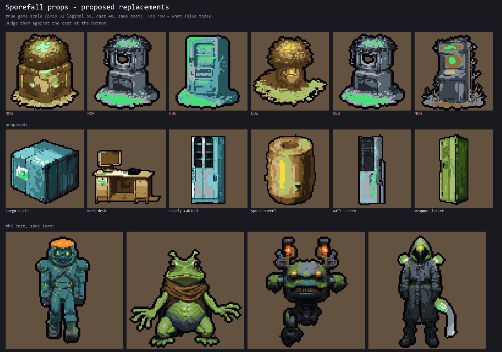
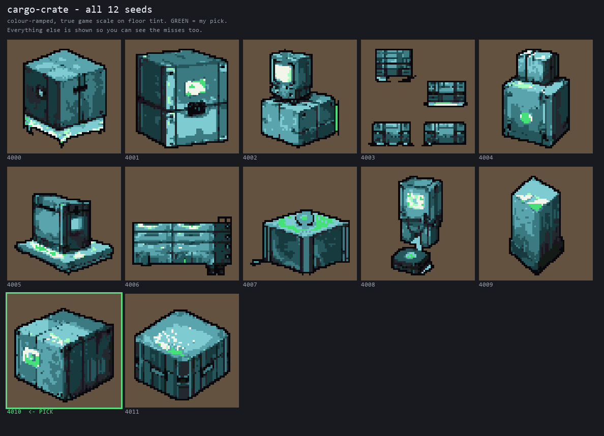
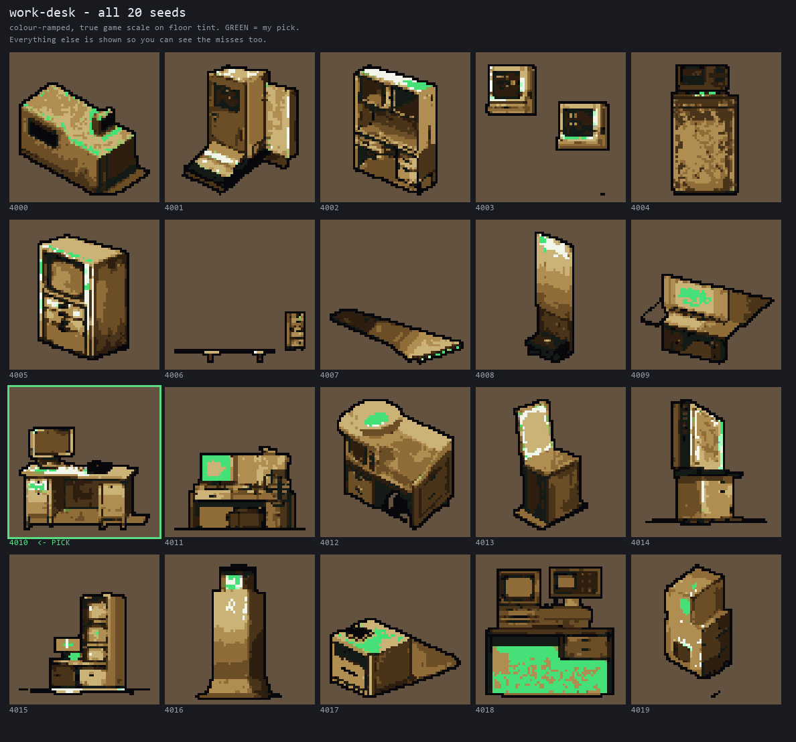
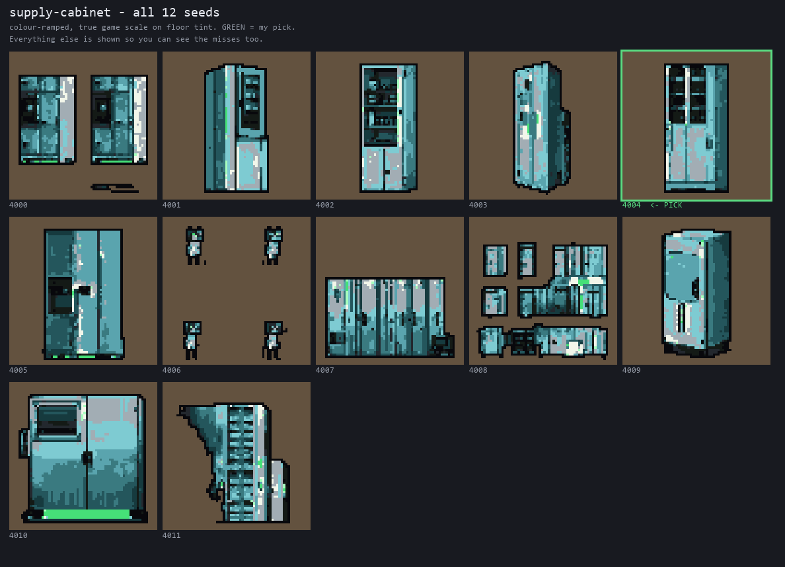
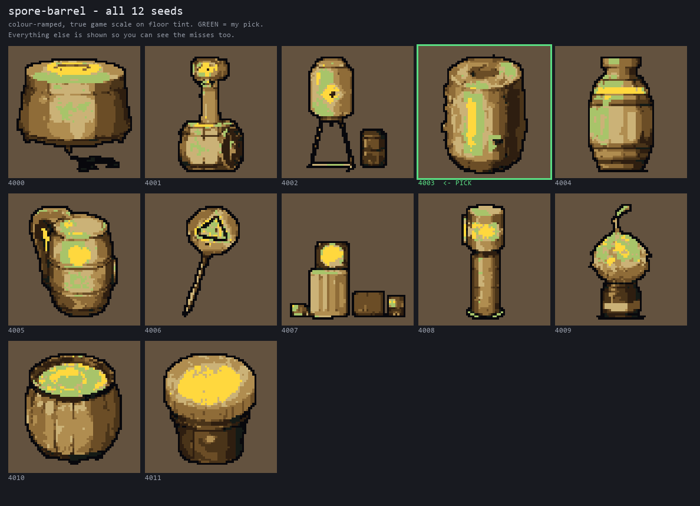
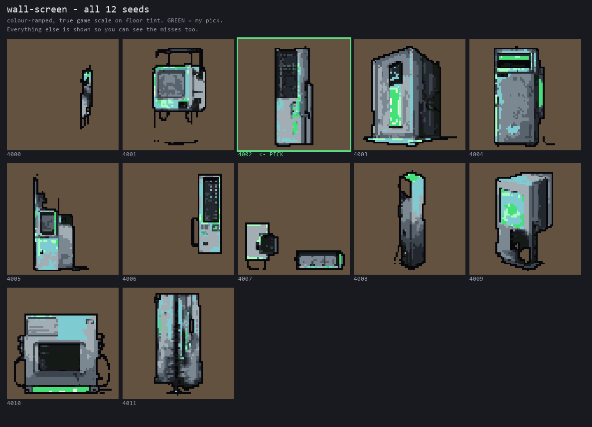
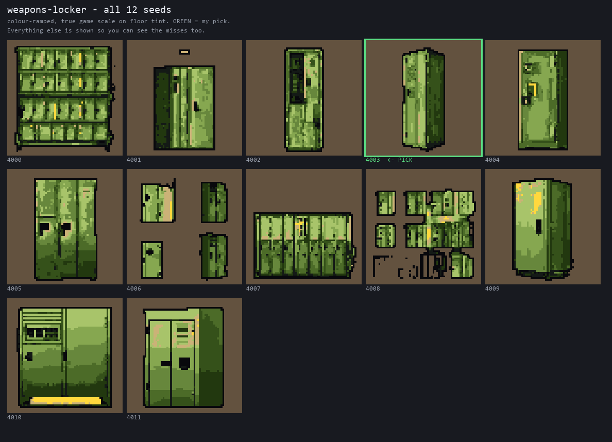

Every image is at true game scale: props at their real 32-logical-px footprint, the cast at 48, same zoom. Pinch to zoom.
These are proposals, not decisions. Tell me which to keep and which to re-roll.
Top row is the current art. Bottom row is what I would replace it with.

Most-seen prop on a floor. Stacking was the dominant failure.

Weakest yield of the six. The pick has a monitor on it, which the recipe actually forbids — but at 32px that monitor is what makes it read as a desk rather than a plain slab. Your call.

Best yield of the six.


Honest warning: this one did not work. It keeps producing floor-standing kiosks and terminals instead of a thin wall-mounted panel. The pick is the least-bad, not a good one.

